Moje projekty
Kompilator własnego języka
Program przekładający pewien kod na procedury rozumiane przez odpowiednią maszynę. Zawiera on implementację takich funkcji jak mnożenie, dzielenie czy możliwość deklarowania procedur.
Porównanie metaheurystyk przy problemie komiwojażera
Zbiór implementacji algorytmów metaheurystycznych, które pozwalają na ocenę wyników otrzymanych przez każdy z nich. Szukają one najkrótszej ścieżki przechodzącej przez każde z miast tylko 1 raz.Aplikacja do zarządzania produktami w sklepie
Aplikacja desktopowa współpracująca z bazą danych, która umożliwia operacje typu dodawanie czy usuwanie produktów oraz zarządza dostępem do odpowiednich sektorów w zależności od uprawnień użytkownika.Rozwiązywanie układów równań dla specyficznych macierzy
Program rozwiązujący dany układ równań liniowych za pomocą metody Gaussa z możliwością użycia rozkładu LU. W celu zwiększenia dokładności umożliwia użycie w algorytmie częściowego wyboru elementu głównego. Fragment kodu dostępny jest
function gauss_elimination_with_main_element(matr)
for a in 1:(matr.n)
max = a
for i in (a + 1):(a + matr.l + 1)
if i <= matr.n &&
getMinInRow(matr, i) <= a &&
abs(getA(matr, i, a)) > abs(getA(matr, max, a))
max = i
end
end
if max != a
swapRowsInSMatrix(matr, a, max)
end
for i in (a+1):(a + matr.l + 1)
if i > matr.n || getMinInRow(matr, i) > a
break
end
if abs(getA(matr, a, a)) < min_val
throw("Value at diagonal is close to 0")
end
mult = getA(matr, i, a) / getA(matr, a, a)
setZeroAInSMatrix(matr, i)
for j in (a+1):(getMaxInRow(matr, i))
setA(matr, i, j, getA(matr, i, j) - mult * getA(matr, a, j))
end
matr.b[i] -= mult * matr.b[a]
end
end
res = zeros(matr.n)
for i in (matr.n):-1:1
res[i] = matr.b[i]
for j in (i+1):(getMaxInRow(matr, i))
res[i] -= getA(matr, i, j) * res[j]
end
res[i] /= getA(matr, i, i)
end
return res
end
